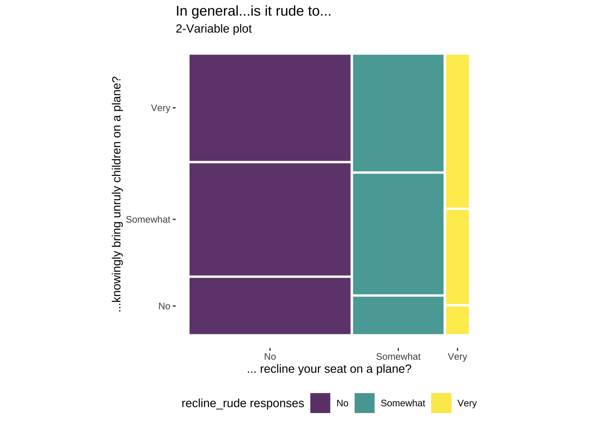
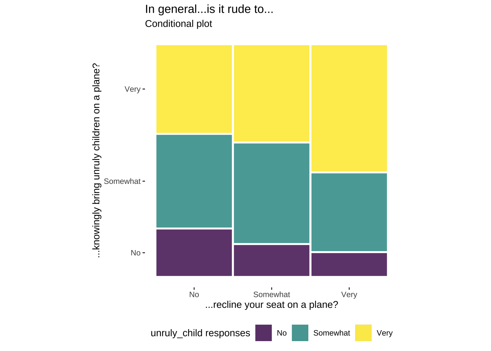
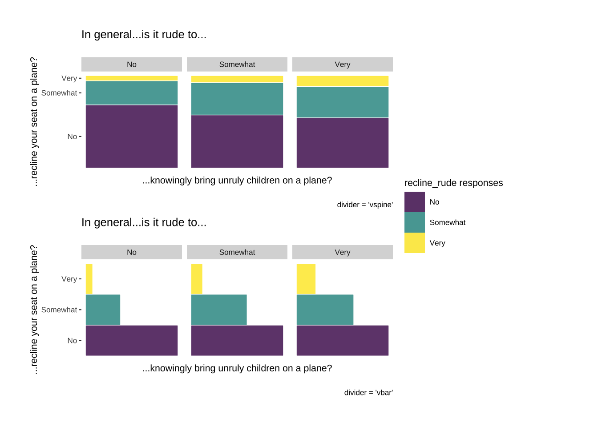
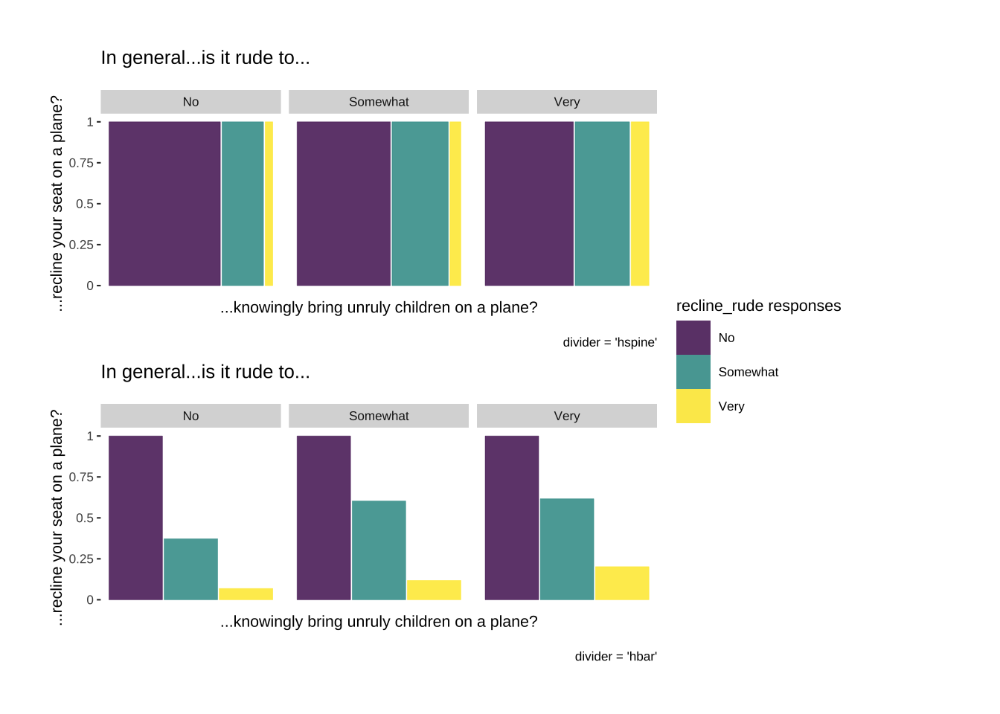

A mosaic plot is similar to a stacked bar-graph, but instead of only relying on height and color to display the relative amount for each value, mosaic plots also use width.
Mosaic plot legends should be positioned on top or bottom and justified horizontally to preserve shape and improve readability.
Rows: 849
Columns: 3
$ baby <ord> No, Somewhat, Somewhat, Somewhat, Very, No, Somewhat, Ver…
$ unruly_child <ord> No, Very, Very, Very, Very, Somewhat, Very, Very, Very, V…
$ recline_rude <ord> Somewhat, No, No, No, No, Somewhat, No, Very, No, Somewha…
Below is another example of a two-variable mosaic plot, mapping the product() variables as unruly_child and recline_rude, and the fill variable as recline_rude.
Once again we can see the counts for each category in the cross-tabulation:
unruly_child
No
Somewhat
Very
Very
193
119
39
Somewhat
204
123
24
No
102
38
7
Code
# build 2-variable mosiac plotlabs_mosaic_2var <-labs(title ="In general...is it rude to...", subtitle ="2-Variable plot",x ="... recline your seat on a plane?",y ="...knowingly bring unruly children on a plane?",fill ="recline_rude responses")ggp2_mosaic_2var <-ggplot(data = fly_mosaic) +geom_mosaic(aes(x =product(unruly_child, recline_rude),fill = recline_rude)) + ggmosaic::theme_mosaic(base_size =10) +theme(legend.position ="bottom")ggp2_mosaic_2var + labs_mosaic_2var

For conditional variables, we map the product() variable as unruly_child and the fill variable as baby, but include a conds variable (as product(recline_rude)).
Code
# build conditional mosiac plotlabs_mosaic_cond <-labs(title ="In general...is it rude to...", subtitle ="Conditional plot",x ="...recline your seat on a plane?",y ="...knowingly bring unruly children on a plane?",fill ="unruly_child responses")ggp2_mosaic_cond <-ggplot(data = fly_mosaic) +geom_mosaic(aes(x =product(unruly_child), # product variablefill = unruly_child,conds =product(recline_rude))) +# conditional variable ggmosaic::theme_mosaic(base_size =10) +theme(legend.position ="bottom")ggp2_mosaic_cond + labs_mosaic_cond

FACETS:
Another option for including a conditioning variable is including facets. In the example below we use recline_rude in both x and fill (we don’t need to wrap recline_rude in product() because it’s the only variable).
The divider argument let’s us control the spine partitions (vertically and horizontally). Below are the two vertical orientation options for the divider argument.

The two horizontal orientation options make the axis text harder to read, so these need to be manipulated manually.

Source Code
---title: "Mosaic Plots"format: html: toc: true code-fold: show out-height: '100%' out-width: '100%'execute: warning: false message: false---```{r}#| label: setup#| message: false#| warning: false#| include: falselibrary(tidyverse)library(lubridate)library(scales)library(knitr)library(kableExtra)library(colorblindr)library(downlit)library(patchwork)# options ----options(repos ="https://cloud.r-project.org",dplyr.print_min =6, dplyr.print_max =6, scipen =9999)# fonts ----library(extrafont)library(sysfonts)# import fontextrafont::font_import(paths ="../assets/Ubuntu/",prompt =FALSE)# add fontsysfonts::font_add(family ="Ubuntu", regular ="../assets/Ubuntu/Ubuntu-Regular.ttf")# use fontshowtext::showtext_auto()# add themesource("../R/theme_ggp2g.R")# set themeggplot2::theme_set(theme_ggp2g(base_size =15))# install data packages ----install.packages("palmerpenguins")library(palmerpenguins)install.packages("fivethirtyeight")library(fivethirtyeight)install.packages("fivethirtyeight")devtools::install_github("haleyjeppson/ggmosaic")library(ggmosaic)```:::: {.callout-tip collapse="false" icon=false}## Graph info::: {style="font-size: 1.25em; color: #38B44A;"}**Should I use this graph?**:::<br>```{r}#| label: full_code_display#| eval: true#| echo: false#| warning: false#| message: false#| out-height: '60%'#| out-width: '60%'#| fig-align: rightlibrary(fivethirtyeight) library(ggmosaic)library(ggplot2) fly_mosaic <- fivethirtyeight::flying |> dplyr::select(baby, unruly_child, recline_rude) |> tidyr::drop_na()labs_mosaic <-labs(title ="In general...", subtitle ="...is it rude to...",x ="... bring a baby on a plane?",y ="...knowingly bring unruly children on a plane?",fill ="Response") ggp2_mosaic <-ggplot(data = fly_mosaic) + ggmosaic::geom_mosaic(mapping =aes(x =product(unruly_child, baby), fill = baby)) + ggmosaic::theme_mosaic(base_size =10) +theme(legend.position ="bottom")ggp2_mosaic + labs_mosaic```A mosaic plot is similar to a stacked bar-graph, but instead of only relying on height and color to display the relative amount for each value, mosaic plots also use width.Mosaic plot legends should be positioned on top or bottom and justified horizontally to preserve shape and improve readability. We can build mosaic plots using the [`ggmosaic` package.](https://haleyjeppson.github.io/ggmosaic/):::::::: {.panel-tabset}### Packages::: {style="font-size: 0.90em; color: #1e83c8;"}**PACKAGES:**:::::: {style="font-size: 0.85em;"}Install packages.:::::: {style="font-size: 0.75em;"}```{r}#| label: pkg_code_#| eval: true#| echo: true#| warning: false#| message: false#| results: hideinstall.packages("fivethirtyeight")library(fivethirtyeight) devtools::install_github("haleyjeppson/ggmosaic")library(ggmosaic)library(ggplot2)```:::### Data::: {style="font-size: 0.90em; color: #1e83c8;"}**DATA:**:::::: {.column-margin}{fig-align="right" width="45%" height="45%"}:::::: {style="font-size: 0.85em;"}For this graph, we'll be using the `fivethirtyeight::flying` dataset, after removing the missing values from `baby`, `recline_rude`, and `unruly_child`. :::::: {style="font-size: 0.75em;"}```{r}#| label: data_code_mosaic#| eval: true#| echo: truefly_mosaic <- fivethirtyeight::flying |> dplyr::select(baby, unruly_child, recline_rude) |> tidyr::drop_na()glimpse(fly_mosaic)```::::::::::: {.panel-tabset}### Code::: {style="font-size: 0.90em; color: #1e83c8;"}**CODE:**:::::: {style="font-size: 0.85em;"}Create labelsMap the `product()` of `unruly_child` and `baby` to the `x` axisMap `baby` to `fill`Add `theme_mosaic()`Move the legend to the bottom with `theme(legend.position = "bottom")`:::::: {style="font-size: 0.75em;"}```{r}#| label: code_graph_mosaic#| eval: false#| echo: true #| warning: false#| message: false#| out-height: '100%'#| out-width: '100%'#| column: page-inset-right#| layout-nrow: 1labs_mosaic <-labs(title ="In general...", subtitle ="...is it rude to...",x ="... bring a baby on a plane?",y ="...knowingly bring unruly children on a plane?",fill ="Response") ggp2_mosaic <-ggplot(data = fly_mosaic) + ggmosaic::geom_mosaic(mapping =aes(x =product(unruly_child, baby), fill = baby)) + ggmosaic::theme_mosaic(base_size =10) +theme(legend.position ="bottom")ggp2_mosaic + labs_mosaic```:::### Graph::: {style="font-size: 0.90em; color: #1e83c8;"}**GRAPH:**:::::: {style="font-size: 0.75em;"}```{r}#| label: run_graph_mosaic#| eval: true#| echo: false #| warning: false#| message: false#| out-height: '100%'#| out-width: '100%'#| column: page-inset-right#| layout-nrow: 1labs_mosaic <-labs(title ="In general...", subtitle ="...is it rude to...",x ="... bring a baby on a plane?",y ="...knowingly bring unruly children on a plane?",fill ="Response") ggp2_mosaic <-ggplot(data = fly_mosaic) + ggmosaic::geom_mosaic(mapping =aes(x =product(unruly_child, baby), fill = baby)) + ggmosaic::theme_mosaic(base_size =10) +theme(legend.position ="bottom")ggp2_mosaic + labs_mosaic```:::### Details::: {style="font-size: 0.90em; color: #1e83c8;"}**DETAILS:**:::::: {style="font-size: 0.85em;"}We've re-written the labels for the mosaic plot (`ggp2_mosaic`) to illustrate what's happening in the `aes()` of `geom_mosaic()`.:::::: {.column-margin}::: {style="font-size: 0.95em; color: #9d40f5;"}It's a good idea to adjust the `fig-height` and `fig-width` of your graph::::::::: {style="font-size: 0.75em;"}```{r}#| label: create_table_mosaic#| eval: true#| echo: false#| warning: false#| message: false#| out-height: '100%'#| out-width: '100%'#| fig-align: center#| layout-nrow: 2# graphlabs_mosaic <-labs(title ="In general...is it rude to...", subtitle ="f(unruly_child | baby) f(baby)",x ="... bring a baby on a plane?",y ="...knowingly bring unruly children on a plane?",fill ="Response") ggp2_mosaic <-ggplot(data = fly_mosaic) + ggmosaic::geom_mosaic(mapping =aes(x =product(unruly_child, baby), fill = baby)) + ggmosaic::theme_mosaic(base_size =10) +theme(legend.position ="bottom")ggp2_mosaic + labs_mosaic# tablefly_mosaic_counts <- fly_mosaic |> dplyr::count(unruly_child, baby) |> tidyr::pivot_wider(names_from = baby, values_from = n) |> dplyr::arrange(desc(unruly_child)) |> dplyr::mutate(Very =as.character(Very),Very = tidyr::replace_na(Very, ""))kableExtra::kable_paper(kable_input = knitr::kable(fly_mosaic_counts), font_size =14)```:::::: {style="font-size: 0.85em;"}The table above displays the counts for each combined response. As we can see, the counts are represented by height and width in the graph.:::::::## More infoI recommend reading the [`ggmosaic` vignette](https://haleyjeppson.github.io/ggmosaic/articles/ggmosaic.html), particularly the sections on ordering and conditioning. :::: {.panel-tabset}### Two variables::: {style="font-size: 0.90em; color: #1e83c8;"}**TWO VARIABLES:**:::::: {style="font-size: 0.85em;"}Below is another example of a two-variable mosaic plot, mapping the `product()` variables as `unruly_child` and `recline_rude`, and the `fill` variable as `recline_rude`.Once again we can see the counts for each category in the cross-tabulation::::::: {style="font-size: 0.75em;"}```{r}#| label: fly_mosaic_2var_counts#| eval: true#| echo: false#| warning: false#| message: false#| column: margin# tablefly_mosaic_2var_counts <- fly_mosaic |> dplyr::count(unruly_child, recline_rude) |> tidyr::pivot_wider(names_from = recline_rude, values_from = n) |> dplyr::arrange(desc(unruly_child))kableExtra::kable_paper(kable_input = knitr::kable(fly_mosaic_2var_counts), font_size =12)```:::::: {style="font-size: 0.75em;"}```{r}#| label: ggp2_mosaic_2var#| eval: true#| echo: true#| warning: false#| message: false#| out-height: '100%'#| out-width: '100%'#| column: page-inset-right#| layout-nrow: 1# build 2-variable mosiac plotlabs_mosaic_2var <-labs(title ="In general...is it rude to...", subtitle ="2-Variable plot",x ="... recline your seat on a plane?",y ="...knowingly bring unruly children on a plane?",fill ="recline_rude responses")ggp2_mosaic_2var <-ggplot(data = fly_mosaic) +geom_mosaic(aes(x =product(unruly_child, recline_rude),fill = recline_rude)) + ggmosaic::theme_mosaic(base_size =10) +theme(legend.position ="bottom")ggp2_mosaic_2var + labs_mosaic_2var```:::::: {style="font-size: 0.85em;"}For conditional variables, we map the `product()` variable as `unruly_child` and the `fill` variable as `baby`, but include a `conds` variable (as `product(recline_rude)`).:::::: {style="font-size: 0.75em;"}```{r}#| label: ggp2_mosaic_cond#| eval: true#| echo: true#| warning: false#| message: false#| out-height: '100%'#| out-width: '100%'#| column: page-inset-right#| layout-nrow: 1# build conditional mosiac plotlabs_mosaic_cond <-labs(title ="In general...is it rude to...", subtitle ="Conditional plot",x ="...recline your seat on a plane?",y ="...knowingly bring unruly children on a plane?",fill ="unruly_child responses")ggp2_mosaic_cond <-ggplot(data = fly_mosaic) +geom_mosaic(aes(x =product(unruly_child), # product variablefill = unruly_child,conds =product(recline_rude))) +# conditional variable ggmosaic::theme_mosaic(base_size =10) +theme(legend.position ="bottom")ggp2_mosaic_cond + labs_mosaic_cond```:::### Facets::: {style="font-size: 0.90em; color: #1e83c8;"}**FACETS:**:::::: {style="font-size: 0.85em;"}Another option for including a conditioning variable is including facets. In the example below we use `recline_rude` in both `x` and `fill` (we don't need to wrap `recline_rude` in `product()` because it's the only variable).The `divider` argument let's us control the spine partitions (vertically and horizontally). Below are the two vertical orientation options for the `divider` argument. :::::: {style="font-size: 0.85em;"}```{r}#| label: patchwork_mosaic_run_v#| eval: true#| echo: false#| warning: false#| message: false#| out-height: '100%'#| out-width: '100%'#| column: page-inset-right#| layout-nrow: 1labs_mosaic_facet <-labs(title ="In general...is it rude to...",caption ="divider = 'vspine'",y ="...recline your seat on a plane?",x ="...knowingly bring unruly children on a plane?",fill ="recline_rude responses") ggp2_mosaic_vspine <-ggplot(data = fly_mosaic) + ggmosaic::geom_mosaic(aes(x = recline_rude, fill = recline_rude), divider ="vspine") +facet_grid(. ~ unruly_child) + ggmosaic::theme_mosaic(base_size =8) +theme(axis.text.x =element_blank(),axis.ticks.x =element_blank(),panel.grid.minor.x =element_blank(),panel.grid.major =element_blank()) + labs_mosaic_facet +labs(caption ="divider = 'vspine'") ggp2_mosaic_vbar <-ggplot(data = fly_mosaic) + ggmosaic::geom_mosaic(aes(x = recline_rude, fill = recline_rude), divider ="vbar") +facet_grid(. ~ unruly_child) + ggmosaic::theme_mosaic(base_size =8) +theme(axis.text.x =element_blank(),axis.ticks.x =element_blank(),panel.grid.minor.x =element_blank(),panel.grid.major =element_blank()) + labs_mosaic_facet +labs(caption ="divider = 'vbar'") ggp2_mosaic_vspine + ggp2_mosaic_vbar + patchwork::plot_layout(nrow =2, guides ='collect')```:::::: {style="font-size: 0.85em;"}The two horizontal orientation options make the axis text harder to read, so these need to be manipulated manually. :::::: {style="font-size: 0.85em;"}```{r}#| label: patchwork_mosaic_run_h#| eval: true#| echo: false#| warning: false#| message: false#| out-height: '100%'#| out-width: '100%'#| column: page-inset-right#| layout-nrow: 1ggp2_mosaic_hspine <-ggplot(data = fly_mosaic) + ggmosaic::geom_mosaic(aes(x = recline_rude, fill = recline_rude), divider ="hspine") +facet_grid(. ~ unruly_child) + ggmosaic::theme_mosaic(base_size =8) +theme(axis.text.x =element_blank(),axis.ticks.x =element_blank(),panel.grid.minor.x =element_blank(),panel.grid.major =element_blank()) + labs_mosaic_facet +labs(caption ="divider = 'hspine'") ggp2_mosaic_hbar <-ggplot(data = fly_mosaic) + ggmosaic::geom_mosaic(aes(x = recline_rude, fill = recline_rude), divider ="hbar") +facet_grid(. ~ unruly_child) + ggmosaic::theme_mosaic(base_size =8) +theme(axis.text.x =element_blank(),axis.ticks.x =element_blank(),panel.grid.minor.x =element_blank(),panel.grid.major =element_blank()) + labs_mosaic_facet +labs(caption ="divider = 'hbar'") ggp2_mosaic_hspine + ggp2_mosaic_hbar + patchwork::plot_layout(nrow =2, guides ='collect')```:::::::